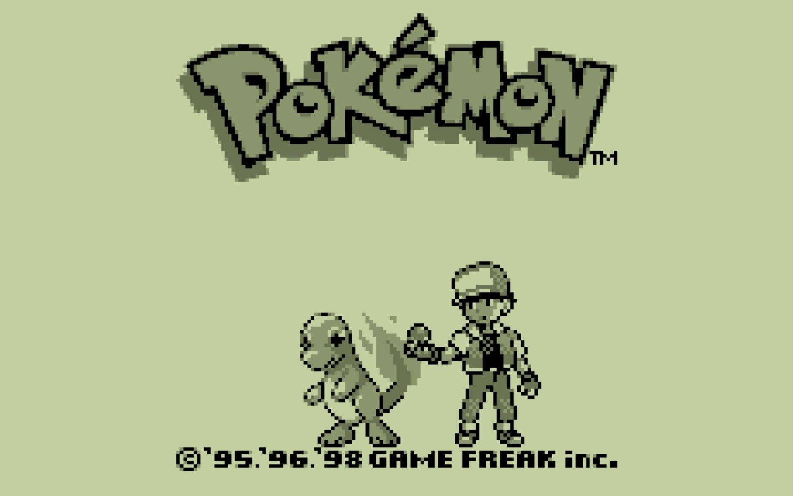

Feito por: Henrique Castro Caetano

Nesse site nas paginas tipos de pokemon e tipos de pokebolas uso botoes interativos e na pagina pokedex consumo uma api utilizando js para pesquisar pokemons e fazer uma lista deles
O que são Pokémons?

Pokémon é uma franquia de mídia que pertence a The Pokémon Company, tendo sido criada por Satoshi Tajiri em 1995. Ela é centrada em criaturas ficcionais chamadas "Pokémon", que os seres humanos capturam e os treinam para lutarem um contra o outro como um esporte.
Como foi criado?
Tajiri teve a ideia de Pokémon por volta de 1989 ou 1990, quando o Game Boy foi lançado. O conceito do universo Pokémon foi inspirado no passatempo do diretor executivo Satoshi Tajiri de colecionar insetos quando era criança, Então como as crianças estavam prestando mais atencão aos videogames do que a brincar ao ar livre (Ou fazer isso) Ele decidiu fazer um videogame onde as crianças podiam fazer isso, Mas com monstros!Os jogadores dos jogos são chamados de Treinadores Pokémon e dois dos principais objetivos (na maioria dos jogos Pokémon) para os Treinadores são: completar a Pokédex, capturando todas as espécies Pokémon disponíveis; e treinar seu time de Pokémon para competir contra o time de outros Treinadores e, eventualmente, se tornar o mais forte Treinador: um Mestre Pokémon.